Um construtor guloso guiado por uma rede, comparado com outros métodos de otimização.
No Modo Clássico do PokéRogue você monta um time e enfrenta uma sequência de batalhas. A pergunta que vamos otimizar é uma só: qual time usar para vencer os vários Pokémon inimigos?
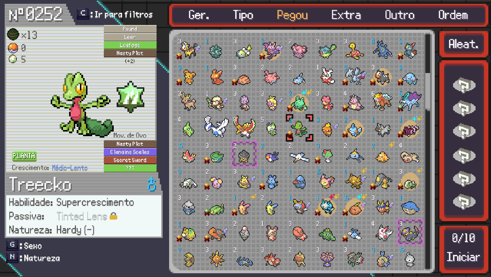
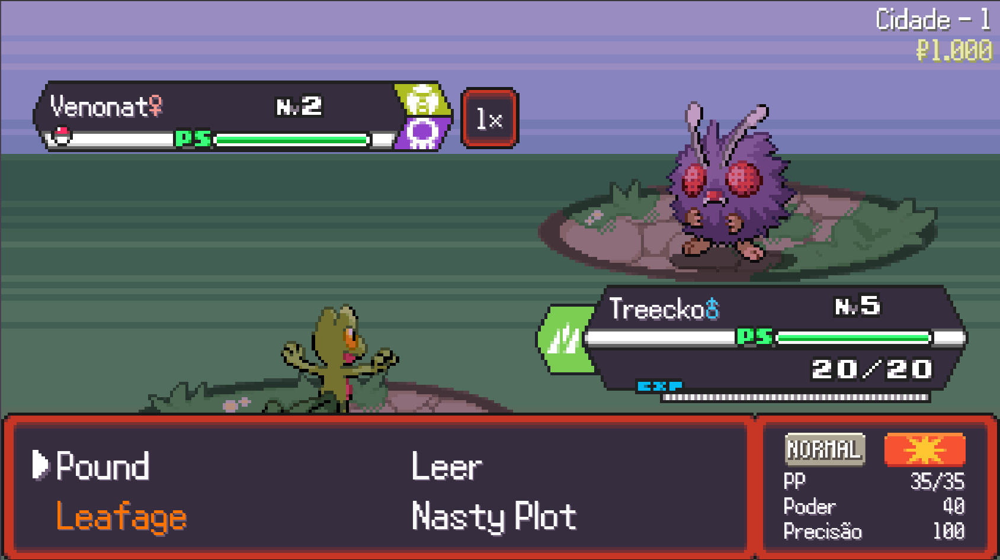
O que é o score
Contra o conjunto dos inimigos mais problemáticos do jogo (194 no total), o time enfrenta cada um numa luta 1×1, decidida por dano causado, dano sofrido e HP restante. O score é quantas dessas lutas o time vence, de 0 a 194.
Onde a rede entra
A rede não joga. Ela ajuda a montar o time: a cada membro escolhido, estima o quanto aquela escolha leva a um bom time no fim. É uma função de valor.
| Método | Como monta o time | Papel |
|---|---|---|
| SA | Embaralha o time inteiro várias vezes procurando o melhor | Referência de qualidade |
| Guloso com score real | Monta membro a membro, sempre pegando quem dá o melhor score real na hora | Rápido, mas nunca revê uma escolha |
| Guloso com rede | O mesmo, porém guiado pela previsão da rede | O que estamos testando |
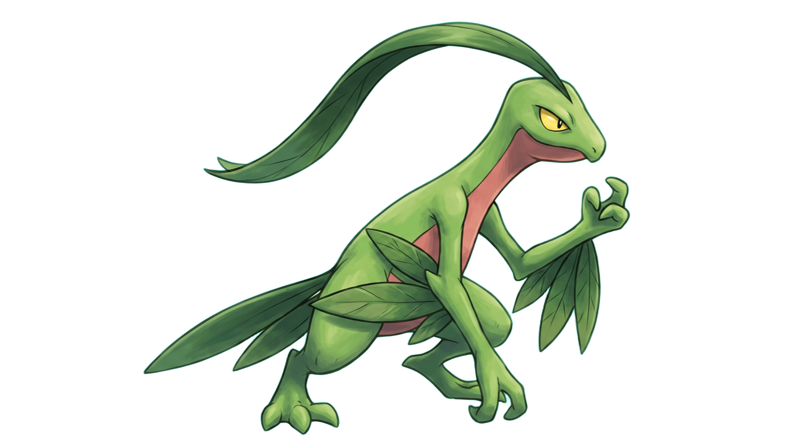
Grovyle Grass
Tipo · 18 números
Stats · 6 números (valor original → normalizado)
HP 50→0,071 · Atk 65→0,108 · Def 45→0,075 · SpA 85→0,142 · SpD 65→0,108 · Spe 95→0,158
4 golpes × 22 números = 88 (tipo em 18 bits + categoria, power, acurácia, prioridade, normalizados)
| Golpe | Tipo | Categoria | Power | Acurácia | Prioridade |
|---|---|---|---|---|---|
| Leaf Blade | Grass | 0,5 | 0,450 | 1,00 | 0 |
| Dragon Breath | Dragon | 1,0 | 0,300 | 1,00 | 0 |
| X-Scissor | Bug | 0,5 | 0,400 | 1,00 | 0 |
| Quick Attack | Normal | 0,5 | 0,200 | 1,00 | 0,167 |
Um time e seu score
Pegamos um time completo e seu score real. Este vale 176. Dele tiramos vários exemplos, todos rotulados com esse 176 final:
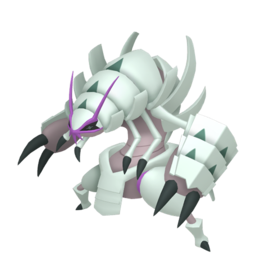
Golisopod , ?Dondozo )→176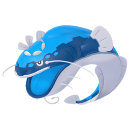
Dondozo , ?Starmie )→176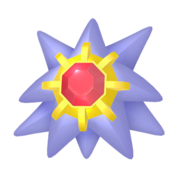
Starmie , ?Dewgong )→176"Mas como só o Golisopod já vale 176?"
Ele não vale, sozinho. Nós é que rotulamos cada pedaço com o score final do time de onde ele veio. Este time começou com Golisopod e terminou em 176, então todo pedaço dele recebe 176.
E o que a rede tira disso?
Vendo milhares de times, ela aprende o padrão: certos começos costumam terminar bem, outros mal. Assim, a partir de um começo, ela estima quanto o time termina valendo, não quanto vale agora. É essa noção de futuro que vamos usar para montar o time.
No começo, a maioria dos times era aleatória, e time aleatório quase nunca é bom. A rede via poucos exemplos de topo, então não aprendia a decidir tão bem quanto o guloso justamente onde as boas escolhas se separam das medianas.
O que um neurônio faz
Cada neurônio da 1ª camada recebe as 784 entradas, multiplica cada uma por um peso, soma tudo e ainda soma um viés (um número extra de ajuste, um por neurônio). São 128 neurônios, então saem 128 números para a próxima camada. O viés não é escolhido por nós: começa aleatório e o treino o ajusta, junto com os pesos.
De onde vêm os 108.801 parâmetros
| Camada | Pesos | Vieses | Total |
|---|---|---|---|
| 784 → 128 | 784×128 | +128 | 100.480 |
| 128 → 64 | 128×64 | +64 | 8.256 |
| 64 → 1 | 64×1 | +1 | 65 |
| Soma | 108.801 |
ReLU nas camadas do meio
Ela corta os números negativos em 0. Isso deixa a rede fazer curvas em vez de uma única linha reta. Sem ReLU, empilhar camadas daria só uma reta, incapaz de captar coisas como "defesa ajuda, mas só até certo ponto".
Saída sem ReLU (linear)
A resposta é um número contínuo (o score, de 0 a 194). Se cortássemos negativos também no fim, limitaríamos a previsão sem motivo.
Padronizar a entrada
É a normalização "de verdade": deixamos cada feature com média 0 e variação parecida. Assim o ataque (~0,1) e o bit de tipo (0/1) pesam igual no começo, e a rede não prioriza um só porque seus números são maiores.
1 · Prever
A rede prevê o score de um lote de 256 exemplos juntos. Ajustar de 256 em 256 é mais rápido e estável do que de um em um.
2 · Medir o erro
Comparamos previsão e score real com o MSE, que eleva o erro ao quadrado: erros grandes pesam mais, então a rede foca em não errar feio.
3 · Corrigir
O Adam empurra os pesos na direção que diminui o erro, com um passo (a taxa de aprendizado, 0,001) que ele adapta sozinho.
70% para treinar. 15% para vigiar se está mesmo melhorando e decidir a hora de parar (a parada antecipada corta o treino quando isso estagna por 20 rodadas, para a rede não decorar). Os 15% finais são de teste, nunca vistos, e dão a nota honesta.
A rede prevê o score do time final. O guloso usa isso para escolher, a cada passo, o candidato com a maior previsão de time final. (Exemplo real: só tipo Água.)
O guloso com score real escolhe quem deixa o time melhor neste passo. A rede foi treinada para olhar o time final, então pode preferir um membro mais fraco agora se ele levar a um time melhor no fim. Por exemplo: gastar todo o orçamento num Pokémon forte logo de cara pode impedir completar os 6 depois.
Todos os tipos, orçamento baixo (lutas vencidas, de 0 a 194):
Dobramos os times aleatórios (de ~4 mil para ~8 mil). No cenário só tipo Inseto, orçamento baixo, mesmo com um R² maior (a rede acertando melhor no teste), o guloso com rede piorou: 167 → 156.
Acertar o score de times medianos (o que a nota mede) não é o mesmo que escolher bem no topo (onde o guloso decide).
Se treinar só com times aleatórios deixa a rede fraca no topo, então mostramos a ela também times bons e situações próximas do bom.
A nova base de treino
| Times aleatórios | 5.000 | A parte de baixo |
| Times bons por tipo | 1.800 | O topo, cobrindo cada tipo |
| Times bons gerais | 500 | O topo no geral |
Como a maior parte dos times bons vem do SA, a qualidade do SA é a nossa referência principal. Os vizinhos mostram um pouco além do que o SA achou, mas seria surpreendente a rede descobrir estratégias muito melhores do que aquelas com que foi treinada.
Valores = lutas vencidas (de 194). A última coluna é a rede em % do guloso com score real.
| Cenário | Tipo de teste | Rede | Guloso (score real) | SA | Rede ÷ guloso |
|---|---|---|---|---|---|
| Todos os tipos, orçamento alto | É o próprio treino | 192 | 194 | 194 | 99% |
| Sem lendários, orçamento alto | Parte do que já viu | 189 | 194 | 194 | 97% |
| Só tipo Inseto, orçamento baixo | Cenário novo | 176 | 176 | 176 | 100% |
| Só tipo Água, orçamento baixo | Cenário novo | 172 | 176 | 178 | 98% |
| Só tipo Fogo, orçamento baixo | Cenário novo | 155 | 160 | 164 | 97% |
A rede chega a 99% do guloso. Na primeira versão ficava bem mais longe.
De 92% para 98% do guloso. Era o pior caso da versão antiga.
Entre 97% e 100%. Antes, o tipo Água despencava.
Só tipo Água, orçamento baixo. Gulosos com o mesmo K=10, então a comparação de tempo é justa.
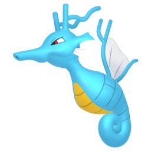
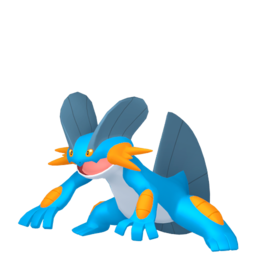
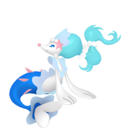
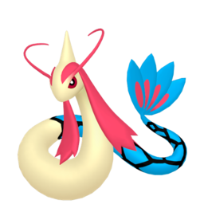
Só o Golisopod aparece nos três. SA e guloso com score real ainda compartilham o Starmie (mesmo moveset); a rede foi por outro caminho (Primarina e Milotic). Placar: 178 / 176 / 172 de 194.
A rede parou em 3 membros e gastou só 8 dos 10 pontos. Ou seja: não achou um 4º Pokémon de Água custando 2 pontos ou menos que aumentasse o score. No mesmo K, foi ~9× mais lenta que o guloso com score real.
Uma rede de valor compensa quando…
O nosso caso não é nenhum dos dois: o score é uma conta barata, e um único SA já é barato e bom.
O que o trabalho mostrou
O que travava a rede não era a arquitetura nem a quantidade de dados, e sim quais dados ela via. Corrigindo isso, ela passou a chegar perto do guloso com score real em todo cenário, sem mudar a rede.
Para este problema, usar uma rede não é a melhor escolha, e o trabalho mostra por quê. É um resultado negativo, mas informativo: a rede de fato aprendeu quando os dados a deixaram, chegando a 97% a 100% do guloso com score real.
Obrigado. Perguntas?